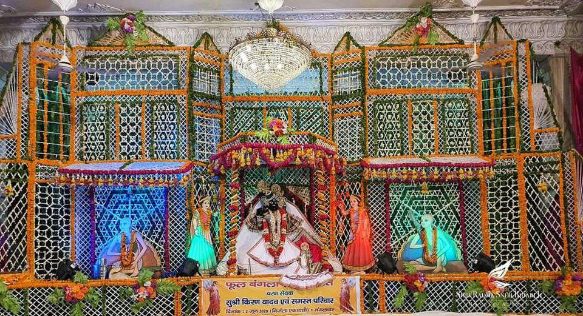

Bankey Bihari Temple is a Hindu temple situated in the town of Vrindavan, Mathura district of Uttar Pradesh, India. The temple is dedicated to Bankey Bihari who is believed to be the combined form of Radha and Krishna. Bankey Bihari was originally worshipped at Nidhivan, Vrindavan. Later, when Bankey Bihari temple was constructed around 1864, idol of Bankey Bihari was moved to new temple. The image of Radha Krishna's united form stands in the Tribhanga posture. Swami Haridas originally worshipped this devotional image under the name of Kunj-Bihari ("one who enjoys in the groves (Kunj) of Vrindavan"). Krishna upholding the Govardhan mountain in the Tribhanga pose 'Bānke' means 'bent', and 'Bihāri' or 'Vihāri' means 'enjoyer'. This is how Kṛiṣhṇa, who is bent in three places, got the name "Bānke Bihāri". According to Śrī Brahma-saḿhitā , Brahma says the following about Kṛishna "I worship Govinda, the primeval Lord, round whose neck is swinging a garland of flowers beautified with the moon-locket, whose two hands are adorned with the flute and jewelled ornaments, who always revels in pastimes of love, whose graceful threefold-bending form of Śyāmasundara is eternally manifest."
